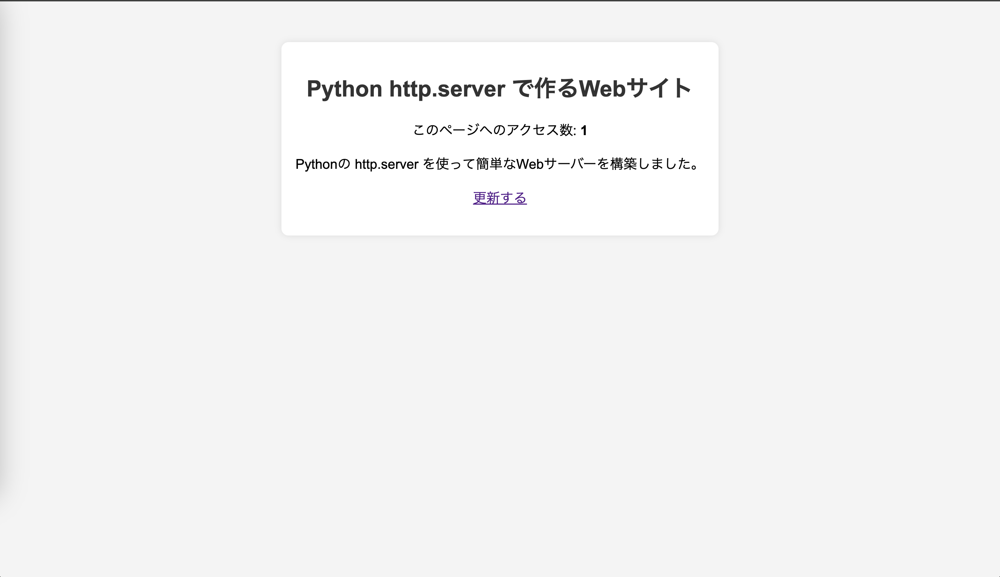

Web（World Wide Web）は、インターネット上で情報を閲覧・共有する仕組みです。 Webサイトにアクセスすることで、ニュースを読んだり、動画を見たり、オンラインショッピングをしたりできます。
requestsモジュールを使用してサーバーにHTTPリクエストを送ってみる
requestsをインストールする
pip install requests
プログラムファイルを用意する
ターミナルで以下コマンドを実行し、メモ帳を開く
pwsh notepad http_requests.py
以下内容を保存し、メモ帳を閉じる ```python import requests
def get_pokemon_data(pokemon_name): url = f”https://pokeapi.co/api/v2/pokemon/{pokemon_name.lower()}” response = requests.get(url)
# HTTPリクエストが成功時は200
if response.status_code == 200:
data = response.json()
print(f"ポケモン名: {data['name'].capitalize()}")
print(f"ID: {data['id']}")
print("タイプ:", ", ".join([t['type']['name'] for t in data['types']]))
print("高さ:", data['height'])
print("重さ:", data['weight'])
print("能力値:", ", ".join([a['ability']['name'] for a in data['abilities']]))
else:
print("ポケモンが見つかりませんでした。")print(“——————-”) # ピカチュウのデータを取得 get_pokemon_data(“pikachu”) print(“——————-”) # ゲンガーのデータを取得 get_pokemon_data(“gengar”) print(“——————-”) ```
プログラムを実行する
python http_requests.py
HTTPサーバーとは簡単に言えば、ブラウザでアクセスできるサーバーのこと
プログラムファイルを用意する
ターミナルで以下コマンドを実行し、メモ帳を開く
pwsh notepad http_server.py
以下内容を保存し、メモ帳を閉じる ```python import http.server import
socketserver
PORT = 8000 counter = 0 # アクセスカウンター
class CustomHandler(http.server.SimpleHTTPRequestHandler): def do_GET(self): global counter counter += 1
# シンプルなHTMLページを生成
html_content = f"""
<!DOCTYPE html>
<html lang="ja">
<head>
<meta charset="UTF-8">
<meta name="viewport" content="width=device-width, initial-scale=1.0">
<title>Python Web Server</title>
<style>
body {{
font-family: Arial, sans-serif;
text-align: center;
padding: 50px;
background-color: #f4f4f4;
}}
.container {{
background: white;
padding: 20px;
border-radius: 10px;
box-shadow: 0px 0px 10px rgba(0,0,0,0.1);
display: inline-block;
}}
h1 {{ color: #333; }}
p {{ font-size: 1.2em; }}
</style>
</head>
<body>
<div class="container">
<h1>Python http.server で作るWebサイト</h1>
<p>このページへのアクセス数: <strong>{counter}</strong></p>
<p>Pythonの http.server を使って簡単なWebサーバーを構築しました。</p>
<p><a href="/">更新する</a></p>
</div>
</body>
</html>
"""
# HTTPレスポンスを送信
self.send_response(200)
self.send_header("Content-type", "text/html; charset=utf-8")
self.end_headers()
self.wfile.write(html_content.encode("utf-8"))# サーバーの起動 with socketserver.TCPServer((““, PORT), CustomHandler) as httpd: print(f”Serving at http://localhost:{PORT}“) httpd.serve_forever()
```
プログラムを実行する python http_server.py
ブラウザで動作確認する http://localhost:8000 
ターミナルに戻りPythonを止める Ctrl + c
を押下して止める
WebスクレイピングとはWebサイトの情報を取得し、解析する技術 Amazonの商品の価格自動取得などで利用される技術
Beautifulsoup4をインストールする
pip install beautifulsoup4
プログラムファイルを用意する
ターミナルで以下コマンドを実行し、メモ帳を開く
pwsh notepad web_scraping.py
以下内容を保存し、メモ帳を閉じる
import requests
from bs4 import BeautifulSoup
def get_weather():
# 取得する都市のYahoo!天気URL（例: 東京）
url = "https://weather.yahoo.co.jp/weather/jp/13/4410.html"
# HTTPリクエストを送信（User-Agentを指定してボット対策を回避）
headers = {"User-Agent": "Mozilla/5.0"}
response = requests.get(url, headers=headers)
if response.status_code == 200:
# HTMLをパース
soup = BeautifulSoup(response.text, "html.parser")
# 今日の天気情報を取得
weather = soup.find("p", class_="pict").text.strip()
temperature_high = soup.find("li", class_="high").text.strip()
temperature_low = soup.find("li", class_="low").text.strip()
print(f"📍 東京の天気情報")
print(f"☀️ 天気: {weather}")
print(f"🌡 最高気温: {temperature_high}")
print(f"❄️ 最低気温: {temperature_low}")
else:
print("天気情報を取得できませんでした")
def main():
get_weather()
if __name__=="__main__":
main()プログラムを実行する python web_scraping.py